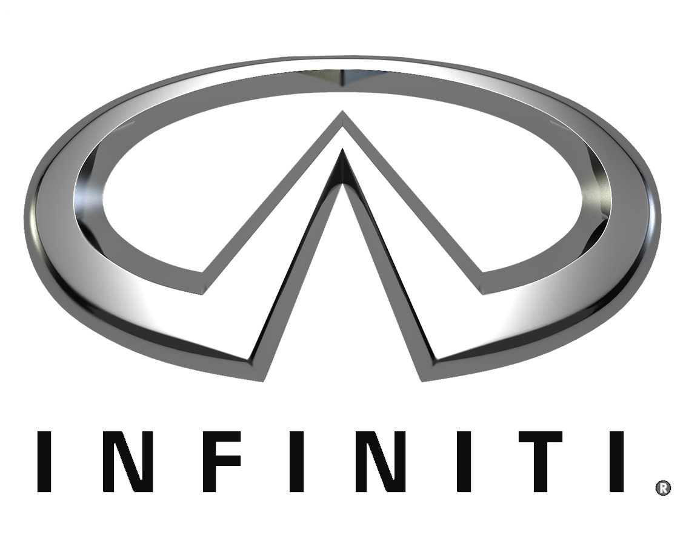
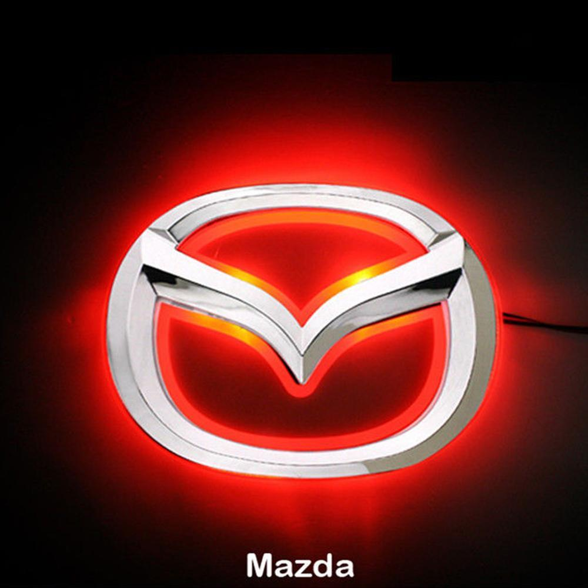

обособленное подразделение японского автопроизводителя Honda, выпускающее автомобили премиум-класса. Acura стал первым японским премиум-брендом, который на равных конкурировал на рынке США с европейскими производителями. узнать больше
Daihatsu Motor Co., Ltd. (яп. ダイハツ工業株式会社 Дайхацу ко:гё: кабусики гайся, TYO: 7262) — японская автомобилестроительная компания со штаб-квартирой в Осаке. С 1967 года начинает сотрудничество с Toyota[1], а с 2016 полностью ей принадлежит. узнать больше
Компания, которая теперь называется Datsun, была образована в 1911 году под именем Кайсинся (яп. 快進社) человеком по имени М. Хасимото. Его мечтой было делать автомобили, подходящие для Японии, а также экспортировать их за рубеж. узнать больше
В 1913 году компания Tokyo Gas Industry начала производство автомобилей Model TGE «A-Type». (Tokyo Gas Industry, основанная в 1910 году, позднее разделилась на компании Tokyo Gas Company и Tokyo Electric Power.) узнать больше
Основатель Honda Соитиро Хонда на протяжении всей своей жизни интересовался автомобилями. Он работал механиком в гараже Art Shokai, где настраивал машины и участвовал в гонках. узнать больше

Официально Infiniti стали продаваться в США 8 ноября 1989 года, когда состоялась презентация двух моделей в салонах 51 дилера. узнать больше
Isuzu Motors Ltd (яп. いすゞ自動車株式会社, Исудзу Дзидо: ся Кабусикигайся) (TYO: 7202) — первая японская автомобилестроительная компания. узнать больше

В 1983 году глава корпорации Toyota Эйдзи Тойода озвучил своё желание создать лучший в мире автомобиль. узнать больше

В 1920 году совместно с группой инвесторов обанкротившуюся строительную компанию Abemaki приобрёл сын простого рыбака, Дзюдзиро Мацуда (яп. 松田 重次郎 Мацуда Дзю:дзиро:, 1875—1952). узнать больше
В 1870 году Ятаро Ивасаки основал судоходную фирму Tsukumo Shokai Shipping Co. узнать больше
Компания Mitsuoka была основана в 1968 году Сусумой Мицуокой. узнать больше
Датой основания корпорации считается 26 декабря 1933 года, когда в результате слияния компаний «Тобата имоно» и «Нихон сангё» была создана новая компания, которая с 1 июня 1934 года носит название «Ниссан мотор» (по первым буквам названия компании «Нихон сангё» — «японская промышленность»). узнать больше
Scion (с англ — «побег, отпрыск, наследник») — бренд японского производителя автомобилей Toyota Motor Corporation, представленный на американском рынке. узнать больше
Основатель и первый президент компании Fuji Heavy Industries Ltd., Кэндзи Кита, был настоящим энтузиастом автомобилестроения и принимал личное участие в создании первого прототипа пассажирского автомобиля Р-1 в 1954 году. узнать больше

В 1924 году Сакити Тоёда изобрел автоматический ткацкий станок Тойода модель G. узнать больше